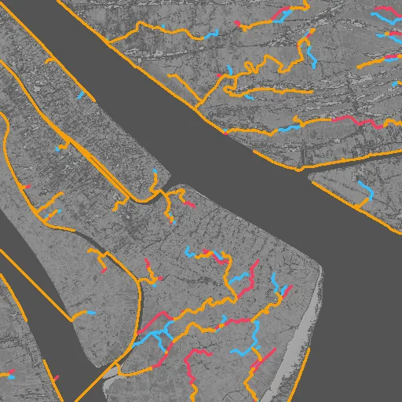
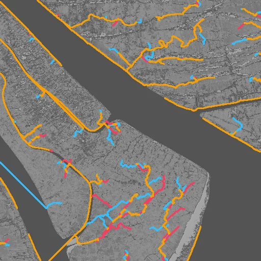
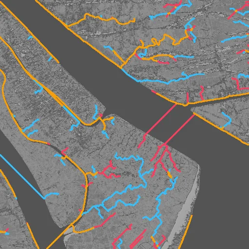
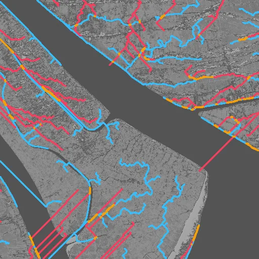
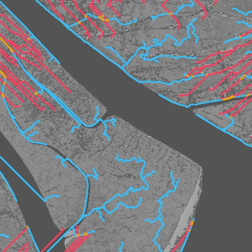
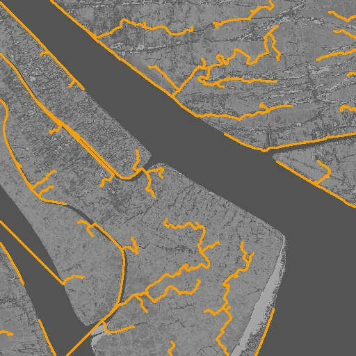
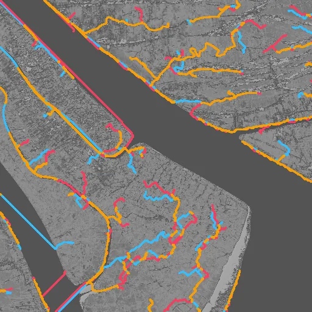
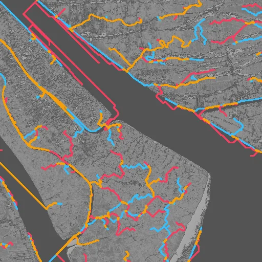
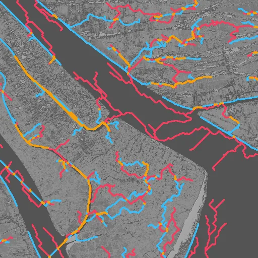
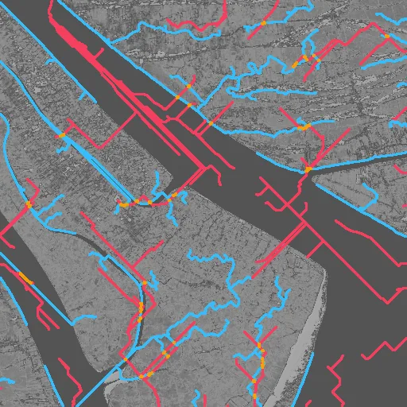

Benchmark / Use cases / Drainage networks / Results / cop-dem-glo30-30
cop-dem-glo30-30
Compression ratio and stream_f1
Each point is a bound on the root-mean-square error, written next to it in metres, on this sample.
GeoZL PIVCOGeoZL PFORJPEG XL
Decoded stream networks
The result on the compressed copy at each error bound, in metres.on both within one celllostnew
GeoZL PIVCO

RMSE ≤ 0.1 m, measured 0.0877
5.4× · stream_f1 +0.839
RMSE ≤ 0.2 m, measured 0.117
6.7× · stream_f1 +0.801
RMSE ≤ 0.4 m, measured 0.32
11.2× · stream_f1 +0.608 RMSE ≤ 0.8 m, measured 0.481
RMSE ≤ 0.8 m, measured 0.481
16.0× · stream_f1 +0.628
RMSE ≤ 1.6 m, measured 1.51
28.3× · stream_f1 +0.142 RMSE ≤ 3.2 m, measured 2.86
RMSE ≤ 3.2 m, measured 2.86
87.3× · stream_f1 +0.622
RMSE ≤ 6.4 m, measured 6.39
65.0× · stream_f1 +0.045GeoZL PFOR
JPEG XL

RMSE ≤ 0.1 m, lossless
4.8× · stream_f1 +1.000
RMSE ≤ 0.2 m, measured 0.196
9.8× · stream_f1 +0.620
RMSE ≤ 0.4 m, measured 0.394
20.3× · stream_f1 +0.502
RMSE ≤ 0.8 m, measured 0.798
106.1× · stream_f1 +0.255
RMSE ≤ 1.6 m, measured 1.51
1464.5× · stream_f1 +0.043 RMSE ≤ 3.2 m, measured 1.51
RMSE ≤ 3.2 m, measured 1.51
1464.5× · stream_f1 +0.043 RMSE ≤ 6.4 m, measured 1.51
RMSE ≤ 6.4 m, measured 1.51
1464.5× · stream_f1 +0.043